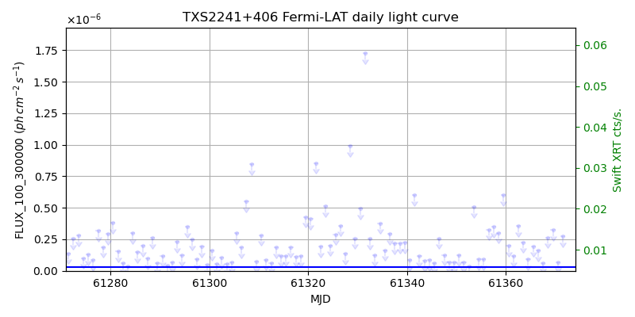
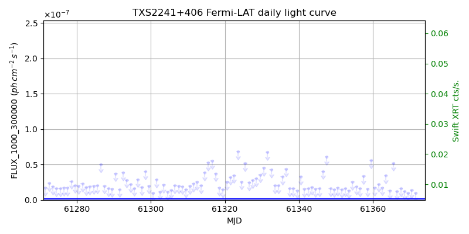

LAT Lightcurve site: https://fermi.gsfc.nasa.gov/ssc/data/access/lat/msl_lc/source/TXS_2241p406
Swift site: https://www.swift.psu.edu/monitoring/source.php?source=TXS2241+406
NED: Query
Time of last update of this page: UT: 2026-11-20 16:30 (MJD: 61364.688)
| Property | Value |
|---|---|
| R.A. | 22:44:12.72 |
| Dec. | 40:57:14.4 |
| z | 1.171 |
| 3FGL SpectrumType | PowerLaw |
| 3FGL PL Index | 2.29 |
| 3FGL Flux_100_300000 | 3.22e-08 1 / (s cm2) |
| 3FGL Flux_1000_300000 | 1.65e-09 1 / (s cm2) |
| 3FGL Flux >200 GeV | 1.78e-12 1 / (s cm2) |
| 3FGL Extrap. Crab >200 GeV | 0.01 |
| 3FGL Flux After EBL Absorption >200GeV | 1.20e-14 1 / (s cm2) |
| 3FGL EBL Crab Fraction >200GeV | 0.00 |

| MJD | dMJD | Flux | dFlux | Frac3FGL | FracCrab>200GeV | EBLFracCrab>200GeV |
|---|---|---|---|---|---|---|
| 61359.50 | 0.50 | 6.00e-07 | 0.00e+00 | 0.00 | 0.00 | 0.00 |
| 61360.50 | 0.50 | 2.00e-07 | 0.00e+00 | 0.00 | 0.00 | 0.00 |
| 61361.50 | 0.50 | 1.16e-07 | 0.00e+00 | 0.00 | 0.00 | 0.00 |
| 61362.50 | 0.50 | 3.57e-07 | 0.00e+00 | 0.00 | 0.00 | 0.00 |
| 61363.50 | 0.50 | 2.27e-07 | 0.00e+00 | 0.00 | 0.00 | 0.00 |
| MJD | dMJD | Flux | dFlux | Frac3FGL | FracCrab>200GeV | EBLFracCrab>200GeV |
|---|---|---|---|---|---|---|
| 61328.50 | 3.50 | 2.54e-07 | 0.00e+00 | 0.00 | 0.00 | 0.00 |
| 61335.50 | 3.50 | 9.91e-08 | 0.00e+00 | 0.00 | 0.00 | 0.00 |
| 61342.50 | 3.50 | 6.29e-08 | 0.00e+00 | 0.00 | 0.00 | 0.00 |
| 61349.50 | 3.50 | 2.43e-08 | 0.00e+00 | 0.00 | 0.00 | 0.00 |
| 61356.50 | 3.50 | 1.94e-07 | 0.00e+00 | 0.00 | 0.00 | 0.00 |

| MJD | dMJD | Flux | dFlux | Frac3FGL | FracCrab>200GeV | EBLFracCrab>200GeV |
|---|---|---|---|---|---|---|
| 61359.50 | 0.50 | 5.59e-08 | 0.00e+00 | 0.00 | 0.00 | 0.00 |
| 61360.50 | 0.50 | 1.68e-08 | 0.00e+00 | 0.00 | 0.00 | 0.00 |
| 61361.50 | 0.50 | 2.23e-08 | 0.00e+00 | 0.00 | 0.00 | 0.00 |
| 61362.50 | 0.50 | 1.74e-08 | 0.00e+00 | 0.00 | 0.00 | 0.00 |
| 61363.50 | 0.50 | 3.45e-08 | 0.00e+00 | 0.00 | 0.00 | 0.00 |

| MJD | dMJD | Flux | dFlux | Frac3FGL | FracCrab>200GeV | EBLFracCrab>200GeV |
|---|---|---|---|---|---|---|
| 61328.50 | 3.50 | 6.83e-09 | 0.00e+00 | 0.00 | 0.00 | 0.00 |
| 61335.50 | 3.50 | 4.69e-09 | 0.00e+00 | 0.00 | 0.00 | 0.00 |
| 61342.50 | 3.50 | 2.59e-09 | 0.00e+00 | 0.00 | 0.00 | 0.00 |
| 61349.50 | 3.50 | 5.81e-09 | 0.00e+00 | 0.00 | 0.00 | 0.00 |
| 61356.50 | 3.50 | 6.80e-09 | 0.00e+00 | 0.00 | 0.00 | 0.00 |
--------------------------------------------------------- Using user-supplied coords: 22:44:12.72 40:57:14.4 2000 --------------------------------------------------------- FLWO UT night of: 2026-11-21 Local Sid. @ Midnight: 03:37 Sunset (-15.0) (local, UT): 18:33 01:33 Sunrise (-15.0) (local, UT): 05:47 12:47 Moonrise (local, UT): Moonset (local, UT): 03:40 10:40 Moon phase: 0.85 --------------------------------------------------------- AzTime LSID UT Obj_el Obj_az Mn_el Mn_az Sep. --------------------------------------------------------- 18:33 22:09 01:33 78.1 35.2 47.9 117.4 41.9 19:03 22:39 02:03 80.5 7.2 53.3 125.0 41.9 19:33 23:09 02:33 79.4 334.8 58.2 134.7 41.9 20:03 23:39 03:03 75.7 314.9 62.3 146.9 41.8 20:33 00:09 03:33 70.7 305.1 65.1 162.1 41.8 21:03 00:39 04:03 65.3 300.5 66.3 179.7 41.8 21:33 01:09 04:33 59.8 298.4 65.4 197.5 41.7 22:03 01:39 05:03 54.1 297.7 62.9 213.2 41.7 22:33 02:09 05:33 48.4 297.9 59.0 225.9 41.7 23:03 02:39 06:03 42.8 298.8 54.2 235.9 41.7 23:33 03:09 06:33 37.2 300.1 48.9 243.9 41.7 00:03 03:39 07:03 31.8 301.8 43.2 250.4 41.7 00:33 04:10 07:33 26.4 303.8 37.3 255.9 41.7 01:03 04:40 08:03 21.1 306.1 31.2 260.7 41.7 01:33 05:10 08:33 16.1 308.8 25.1 265.1 41.7 02:03 05:40 09:03 11.2 311.7 19.0 269.2 41.8 02:33 06:10 09:33 6.6 315.0 12.9 273.0 41.8 03:03 06:40 10:03 2.4 318.6 6.8 276.9 41.9 03:33 07:10 10:33 -1.1 322.6 1.0 280.7 41.9 04:03 07:40 11:03 -5.4 326.9 -4.9 284.7 42.0 04:33 08:10 11:33 -8.9 331.5 -11.1 288.8 42.1 05:03 08:40 12:03 -11.7 336.5 -16.8 293.2 42.2 05:33 09:10 12:33 -14.0 341.9 -22.3 298.1 42.3 05:47 09:25 12:47 -14.9 344.5 -24.8 300.5 42.3 --------------------------------------------------------- Dark hours >55 deg.: 0.00